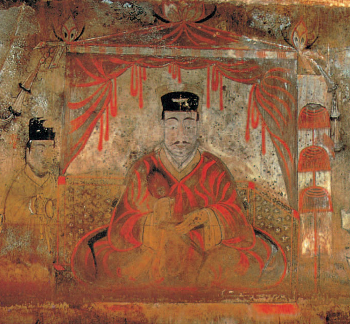
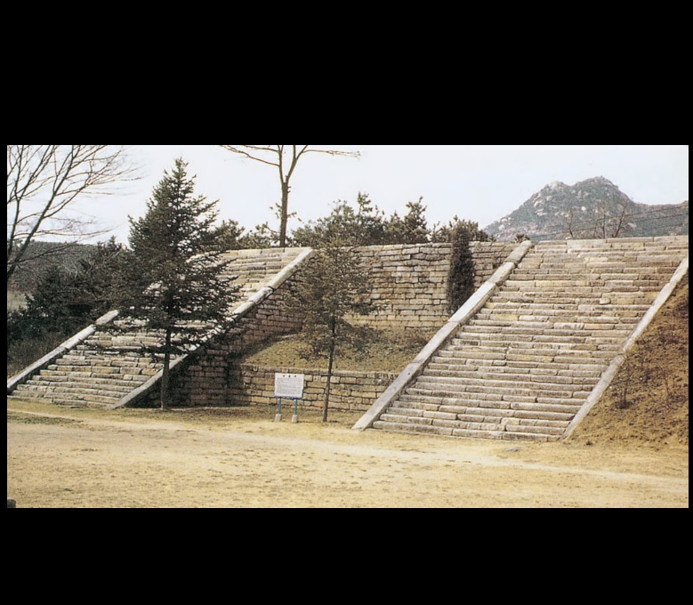
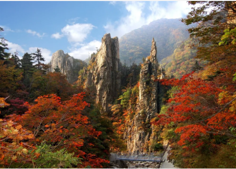

北韓（朝鮮民主主義人民共和國）：
人口與民族：人口約 2,600萬，民族成分單一，主要為朝鮮族。
地理：位於朝鮮半島北部，地形以山地及高原為主（約佔80%），東北高、西南低。
氣候：屬溫帶季風氣候，四季分明，冬季寒冷乾燥，夏季高溫多雨。
旅遊：外國人需由官方旅行社帶領參觀，主要景點包括平壤市、妙香山及開城板門店。

旅遊簡報：
簽證：外籍旅客（除特定中方公務人員）皆須簽證。旅客無法自助申請，必須參加官方認可的團體旅遊，由旅行社代辦「另紙簽證」，護照上通常不會留下出入境章。
貨幣：外國人禁非法持有或使用朝鮮圓，交易僅限現金。建議攜帶小額的人民幣 (RMB)、美元 (USD) 或歐元 (EUR)。當地不接受任何信用卡或國際移動支付。
注意事項：
政治禁忌：嚴禁評論北韓領導人、政治體制或歷史。
拍攝限制：拍攝領袖雕像須拍全身且畫面完整；嚴禁拍攝軍人、警察或軍事建築。


高句麗古墓群分佈於中國吉林集安與北韓平壤、南浦等地。中國境內的高句麗王城、王陵及貴族墓葬與北韓境內的高句麗墓葬群均已被聯合國教科文組織列入《世界遺產名錄》。
歷史價值：為公元前3世紀至公元7世紀高句麗文明的珍貴遺存。
壁畫藝術：部分墓室內存有精美壁畫，生動再現當時的社會生活與宗教信仰。
著名遺跡：包括將軍墳（有「東方金字塔」之稱）及記載開國歷史的好太王碑。


開城歷史建築與遺蹟 (Historic Monuments and Sites in Kaesong, 2013年列入 - 文化遺產)
位置：開城市。
特色：這座遺址由12個獨立遺址組成，是10至14世紀高麗王朝的首都，體現了高麗的政治、文化、哲學和宗教價值。這裡融合了佛教、儒教、道教和風水觀念。
重要景點：高麗成均館、開城防禦性城牆、天文和氣象台、開城歷史古蹟區。




位於金剛山 (Mt. Kumgang - Diamond Mountain from the Sea, 2025年列入 - 複合遺產/文化景觀)
位置：江原道。
特色：被視為南北韓第一座同時擁有自然地貌（奇岩怪石、瀑布、名山）與文化歷史（佛教寺廟、古代石刻）的複合型遺產。分為內金剛、外金剛、海金剛，四季景色各異。
著名景點：九龍瀑布、表訓寺。馬達加斯加的安布希曼加的皇家藍山行宮，是梅里納王國的發源地與宗教聖地 。

